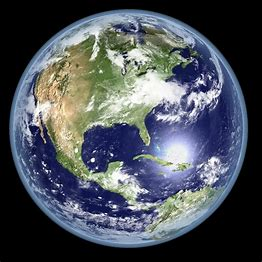

PLANETS
« Previous
Next »
What ia a Solar System?
- The collection of eight planets and their moons in orbit round the sun, together with smaller bodies in the form of asteroids, meteoroids, and comets.
The planets of the solar system are (in order of distance from the sun) Mercury, Venus, Earth, Mars, Jupiter, Saturn, Uranus, and Neptune.
- Why it is called as Solar System:
There are many planetary systems like ours in the universe, with planets orbiting a host star.
Our planetary system is named the "solar" system because our Sun is named Sol, after the Latin word for Sun, "solis," and anything related to the Sun we call "solar."
What are the 9 Planets of the Solar System?
MECURY:
- Mercury is the smallest planet in the solar system, approximately 3000 miles (4850 km) in diameter, hardly larger than the moon.
Despite being the smallest, it’s extremely dense. In fact, it’s the second densest planet after Earth.
It’s also the closest planet to the sun, making it dangerous to explore. Mercury is 48 million miles from the earth.
- Since it’s the nearest planet to the sun, surface temperatures can go up to a scorching 800 degrees Fahrenheit to a freezing -300 degrees below zero.
Mercury orbits the sun every 88 days, faster than any planet, by far. It’s characterized by short year. Despite its short year, a single day on Mercury is equivalent to about 59 Earth days.
Mercury is thought to be more than two-thirds metallic and a third silicon or rock.
VENUS:
- Venus is the second planet from the sun, and close to the earth, which is why it’s often referred to as our sister planet.
It’s similar size to the Earth, about 7300 miles (12,000 kilometers). It’s nicknamed ‘’the morning star,” and thought to be the most inhabitable planet.
Surface temperatures of Venus approach 900 degrees Fahrenheit, hot enough to melt the surface of the earth. Venus has a characteristic thick atmosphere, composed mainly of sulphuric acid and carbon dioxide.
- Humans could not breathe in Venus since the atmosphere would be severely toxic. In fact, Venus’ atmosphere has more acid per cubic centimeters than a car battery.
This atmosphere is the reason why Venus appears brownish-yellow. Venus rotates relatively slowly. It takes 243 days to make a complete turn. Mercury and Venus are the only planets that do not have moons.

EARTH:
- Earth is a unique plant in the entire solar system because it teems with life, including millions of aquatic and terrestrial animal and plant species.
It has active plate movement and humans also live on this planet. Earth’s core is almost entirely composed of iron. The inner core is solid, while the outer core is liquid.
- The next layer is called the mantle and is made up of rock, mostly viscous or semi-liquid state. The surface is formed of a thin rocky crust.
Earth is the 5th largest planet in the solar system (12,000 kilometers in diameter) and is thought to be 4.6 billion years old. The earth revolves around its axis every 24 hours and orbits the sun every 365 days (a year).
The earth consists of one moon.
MARS:
- It often called the red planet and nicknamed Roman god of war. Mars is a little bigger than the earth (about 6,790 kilometers in diameter).
It has almost similar characteristics to earth such as mountain ranges, rolling plains, gigantic canyons, and volcanoes.
- Mars takes 687 days to orbit once around the sun, and its rotation speed is equal to the earth’s (24.6hrs). The surface is mostly covered by iron-rich volcanic rock.
The rock is sprinkled with iron oxide, which gives the planet its characteristic red tint.
Mars has a relatively thin atmosphere, and consists of two small moons.
JUPITER:- Jupiter is the largest of all the planets in the solar systems (142,980 kilometers in diameter) and more than 11 times wider than Planet Earth.
Jupiter rotates around the sun once each 12 years. Despite its sheer size, Jupiter rotates on its axis pretty fast (in 9hrs and 19 min). Jupiter is made up of gas and liquid, and has no solid.
It’s 90% hydrogen and 10% helium, as well as traces of methane, water, and ammonia. This means that if you were to land on the surface, you would sink into it.
- Jupiter is primarily composed of hydrogen, but helium constitutes one-quarter of its mass and one-tenth of its volume. It probably has a rocky core of heavier elements,[16] but, like the other giant planets in the Solar System, it lacks a well-defined solid surface.
SATURN:
- Saturn is the 6th planet away from the sun. It’s one of the largest and brightest planets, nine times the size of the earth (120,536 kilometers), and orbited by numerous objects.
Saturn is recognizable by its system of three rings. It orbits the sun in 12 years and rotates slightly more than 10 hours. Saturn has a relatively small and solid dense core, composed mainly of ice and rock.
It’s surrounded by a layer of liquid metallic hydrogen. The exterior layer is composed of helium, molecular hydrogen and traces of water, methane, and ammonia.
URANUS:
- Uranus is the 7th planet from the sun. It’s the third-largest planet in the solar system, 4.4 times the size of planet earth (51,118 kilometers). Uranus orbits the sun relatively slowly.
It takes 84 years to complete a single orbit, rotating on its axis much faster than the earth (17 hours). Uranus can be seen with the naked eye and has a characteristic blue color. Like Jupiter and Saturn, Uranus has no solid outer surface, which means the entire surface is made up of gases, with a fairly uniform blue-green color.
- However, the core is solid and rocky, and since it’s too far from the sun, the core is surrounded by a mantle of ice, which is why this planet is referred to as an ice triad. As of 2016, Uranus has 27 moons and is wrapped around by a system of nine rings.
Uranium is nicknamed “grandfather of Jupiter.”
NEPTUNE:
- Neptune is a little smaller than Uranus, and 17 times bigger than earth. It has a measurement of 49, 500 kilometers in diameter. Neptune is the 8th and furthest planet from the sun.
It orbits the sun once each 165 years. It has almost similar structure and composition as Neptune, as its outer surface appears blue, and characterized by large dark blue storm systems.
A system of five rings surrounds Neptune and consists of 14 moons. It’s nicknamed the Roman god of the ocean.
PLUTO:
- Pluto is found 3.7 billion miles from the sun. It’s half the size of the earth’s moon, which is why it was renamed dwarf planet. Pluto is composed of chiefly rock and ice. The surface is made up of almost completely frozen methane, nitrogen, and carbon monoxide.
It orbits the sun in 28 years and rotates in a duration of 6.4 days. It’s composed of one large moon and nicknamed the Roman god of outer darkness.